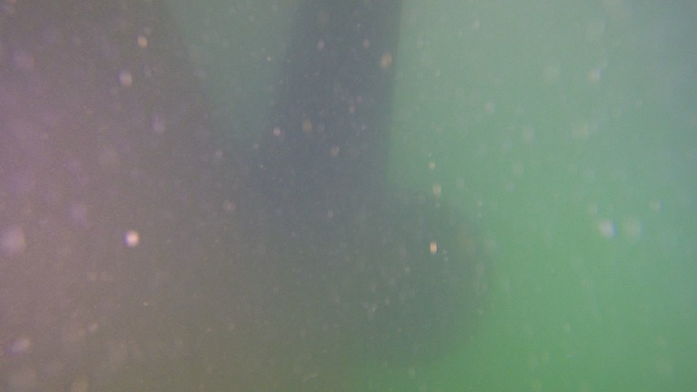

The same inspection task in clear water and in near-zero visibility. The ROV still flies and still records — what changes is how much we can actually assess.

Enough to see it. Not enough to rate it.
When the vis drops, we bring the ROV in closer to the hull and slow down. Passes are narrower with more overlap, so we're covering less ground per pass but not missing anything.
Lights get angled off to the side and turned down - pointing them straight ahead in dirty water just lights up the particles in front of the camera and washes the picture out.
Sonar does the heavy lifting for getting around: it gives us range to the hull well past what we can see, picks up heavy growth and structure, and lets us track along seams, frames, anodes and sea chest gratings to know where we are.
What it won't do is tell us what the fouling actually is - that still needs eyes on it. So if the vis stopped us properly assessing a section, we note it as a limitation, qualify the rating, and recommend a re-inspection rather than guessing.